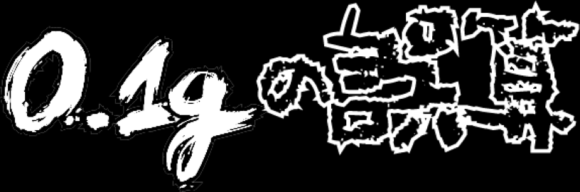
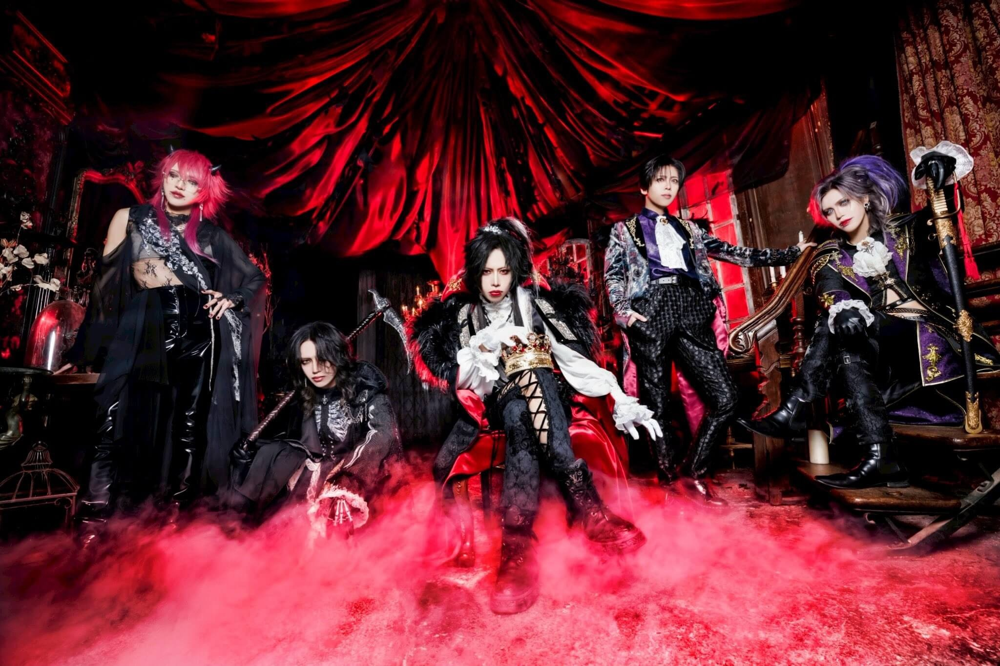

Welcome

This fanpage will cover the news, tours, and other updates related to 0.1g no gosan.
Band Photo

Visual Kei Terminology
Important vocabulary terms used in the Visual Kei community:
- Bangya (バンギャ)
- Short for "Band Gyaru"—the term for female fans of Visual Kei bands.
- Honmei (本命)
- Term used for your favorite band or member in the scene.
- Furitsuke / Furi (振付)
- Synchronized hand movements, gestures, headbanging, or choreography performed by the audience during lives.
- Cheki (チェキ)
- Instant Polaroid photos taken of band members, often sold at merch booths or taken during meet-and-greet sessions.
- Seiban (整理番号)
- The reference/entry number printed on a concert ticket that determines the order fans enter the venue.